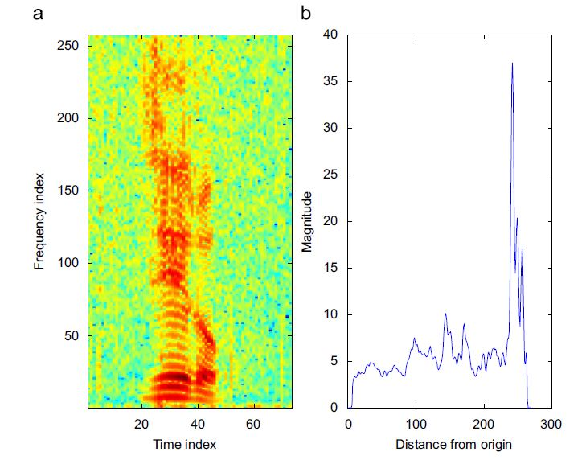

Automatic Speech Sequence Segmentation

Abstract
This project aims at segmenting speech sequences based on speaker transitions. Additionally, it will identify the number of speakers along with the zones where single or multiple speakers are active.
1. Introduction
1.1 Introduction to Problem
Speaker recognition is to recognize persons from their voice. No two individuals sound identical because their vocal tract shapes, larynx sizes, other parts of their voice production organs, manner of speaking including the use of a particular accent, rhythm, in tonation style, pronunciation pattern and choice of vocabulary are different. State-of-the-art speaker recognition systems use number of these features in parallel, attempting to cover different aspects and employing them in complementary ways to achieve more accurate recognition.
1.2 Figure
A sample (a) Spectrogram and its (b) Radon Transform in one chosen direction. 
1.3 Literature Review
Contextual variations in speech are better represented using
a spectrogram and hence it is widely used as a tool for speech
analysis. A spectrogram is a graphical display of the
squared magnitude of the time-varying spectral characteristics of
speech. It is compact and efficient in representation carrying
information about energy, pitch, fundamental frequency,formants and timing.Spectrogram reading techniques have revealed that a speech spectrogram contains rich acoustic features that could be valuable in an automatic speech and speaker recognition system.
1.4 Proposed Approach
It has been established that the phonetic information can be recovered by examining the spectrogram in a visual domain rather than the conventional audio domain. Visual domain working is better because it is easier to ‘‘verbalize’’ speech spectrogram process than to verbalize hearing process.
We present a computationally efficient text-independent speaker recognition technique. The essence of this technique lies in formulating the speaker recognition problem in to pattern recognition of images and resolving it using machine learning tools. The technique computes the Radon projections of the speech spectrogram in different directions to derive the speaker’s voice pattern. Discrete cosine transform (DCT) of Radon projection reduces the feature vector dimension to derive effective and efficient speaker.
Block Diagram representing the process flow.

We present a computationally efficient text-independent speaker recognition technique. The essence of this technique lies in formulating the speaker recognition problem in to pattern recognition of images and resolving it using machine learning tools. The technique computes the Radon projections of the speech spectrogram in different directions to derive the speaker’s voice pattern. Discrete cosine transform (DCT) of Radon projection reduces the feature vector dimension to derive effective and efficient speaker.
Block Diagram representing the process flow.
This section is still under making.
1.5 Report Organization
Write something here.
2. Proposed Approach
Write something here.
3. Experiments & Results
3.1 Dataset Description
Write something here.
3.2 Discussion
Write something here.
4. Conclusions
4.1 Summary
Write something here.
4.2 Future Extensions
Write something here.